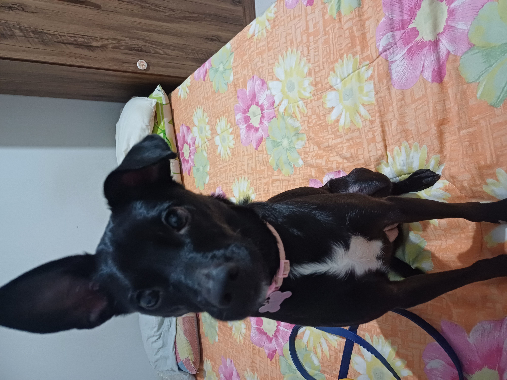
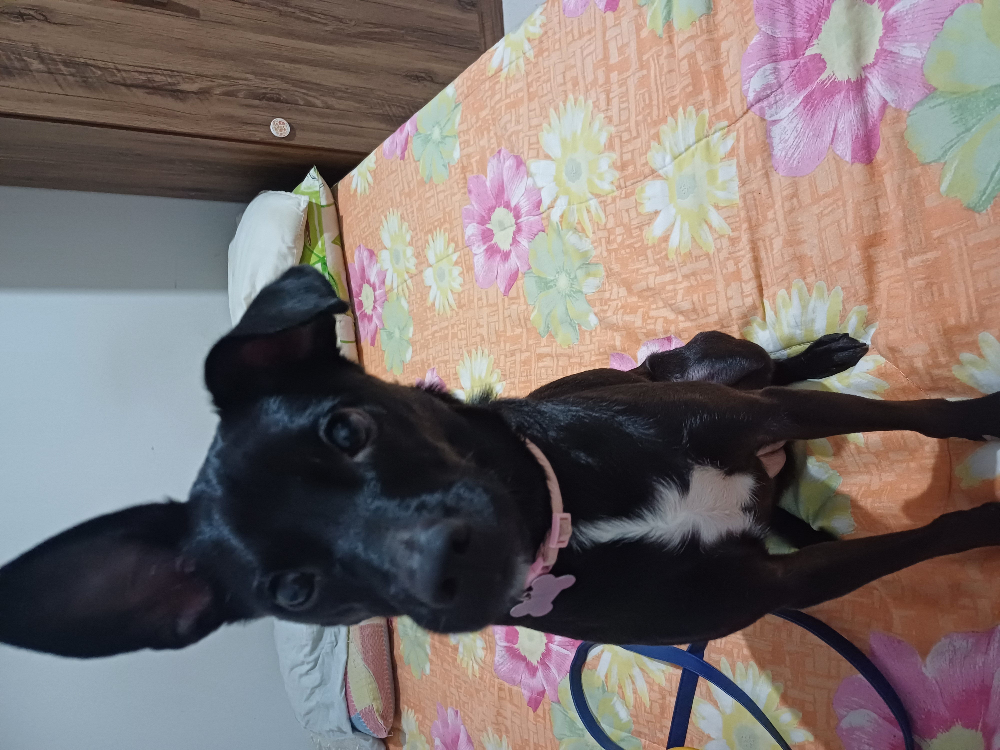

Nasci em uma pequena cidade do interior do Paraná, mas antes de completar um ano de idade vim com minha familia para Toledo,
No ensino fundamental um estudei na Escola Municipal Amelio Dal Bosco, já no fundamental dois (6º ao 9º)
estudei no Colegio Estadual Dr. João Cândido Ferreira, o ensino médio no PREMEN, Cursei engenharia mecânica
por quase dois meses na Unipar em 2020 mas tranquei por conta da pandemia de COVID-19 voltei a
estudar mas agora estou cursando Tecnologia em Sistemas para Internet (TSI).
Conheci minha esposa em 2021 durante a pandemia, não somos casados oficialmente, mas pretendo fazer
o pedido ainda esse ano de 2024, estou esperando pois ainda temos algumas outra coisas para resolver, como achar
as alianças certas e o local e situação onde eu farei o pedido.
Eu e minha esposa temos uma filha
chamada Tipolina Tutti, uma viralata 

sou facinado por carros sejam eles novos ou velhos, gosto de assistir as corridas do grupo B de rally (uma categoria que por ser perigosa de mais foi extinta), eu gosto de todos mas principalmente dos carros alemães como Porsche, BMW, Mercedes, Audi e Volkswagen, tenho até um ou mais preferidos de cada uma das marca.
(clique na imagem para abrir o link e assista o video a baixo)
Rerto gamer é alguem que gosta de jogos e videogames antigos e quer não só joagar mas preserva-los.
Mas tambem gosto de jogos modernos atualmente tenho um Nintendo Switch e um Noteboock Gamer